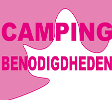
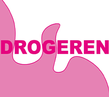
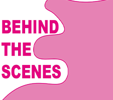

Het is zover het festival seizen gaat weer beginnen,
maar wat moet ik nou eigenlijk meenemen? Van de beste
luchtbedden naar de juiste maat haringen kopen, in deze
aflevering gaan we het hebben over alles wat niet mag
ontbreken op de inpaklijst.

Steeds vaker hoor je enge verhalen over gedrogeerd worden,
of het tijdens een avondje uit in de stad is of op een
internationaal festival. Wij informeren jullie over hoe
te handelen in zulke situaties om het hopelijk te kunnen
voorkomen of herkennen zodat iedereen veilig blijft.

Altijd al willen weten hoe je lievelingsfestival opgebouwd wordt,
de artiesten leven voor en na hun optreden of waarom het terrein
zo is ingericht? Kom meer te weten over alle obstacles waar welk
festival wel mee te maken krijgt tijdens de aflevering Behind The
Scenes.